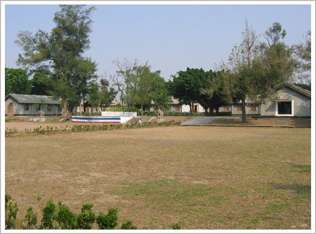
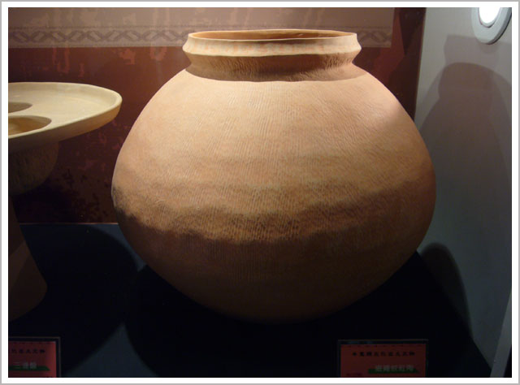

關於牛罵頭

什麼是牛罵頭考古遺址？
「牛罵頭考古遺址」指的就是考古遺址所在的地點，當中堆積了四個史前文化層，由早而晚依序是大坌坑文化、牛罵頭文化、營埔文化、番仔園文化。而「牛罵頭文化」指的是，在距今4500-3400年左右，以繩紋紅陶為特色的史前文化。

什麼是牛罵頭文化？
牛罵頭文化人除了在牛罵頭考古遺址留下生活過的蹤跡，也廣泛分布於中部地區，他們大多居住在海岸和河湖沿岸，但晚期也漸漸朝中游的丘陵山地分布。隨著時間的流動，牛罵頭文化人離去後，又來了新的一群人，也同樣居住在牛罵頭這個地方，就是後來的營埔文化與番仔園文化。

什麼是牛罵社？
「牛罵社」是拍瀑拉族其中一個村社，其聚落位置在今臺中市清水區(原台中縣清水鎮)內。文獻上關於牛罵社的記載，首推十七世紀荷蘭據臺時（西元1624年至1661年）所留下的資料。